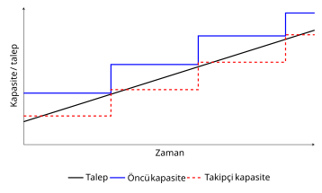

HF02 - Tesis Kapasite Planlama
Bir cümlede
Kapasite planlaması, talebin ne zaman, nerede ve ne kadar karşılanacağını belirler; çok az kapasite satış/hizmet kaybına, fazla kapasite ise atıl yatırıma ve yüksek sabit maliyete yol açtığı için başa baş analizi ve dinamik büyüme modelleriyle bu denge optimize edilir.

1. Kapasite nedir?
Kapasite, bir tesisin belirli bir zaman diliminde üretebileceği, kabul edebileceği, depolayabileceği veya işleyebileceği maksimum birim sayısıdır. Aynı zamanda sistemin “üretim yapabilme kabiliyeti” olarak da tanımlanır.
Sezgi (intuition)
Kapasiteyi bir otoyolun şerit sayısı gibi düşünün. Çok az şerit → trafik sıkışır (talep karşılanamaz, müşteri kaçar). Çok fazla şerit → boş asfalt, israf edilmiş yatırım. Doğru kapasite, “trafiğin akmaya devam ettiği ama asfaltın boşa gitmediği” noktadır.
Kapasite kararları neden kritiktir?
- Sermaye gereksinimi: Sabit maliyetin büyük bölümünü belirler (bina, makine, hangar).
- Rekabet gücü: Talebi karşılayamayan firma pazar payını rakibe kaptırır.
- Geri dönüş oranı: Tesis büyüklüğü, yatırımın geri dönüşünü (ROI) ve kullanım oranını doğrudan etkiler.
Kapasite türleri (paydanın seçimi)
| Tür | Anlamı | Gerçek hayat örneği |
|---|---|---|
| Tasarım kapasitesi | İdeal koşullarda teorik maksimum çıktı | Bir fırının etiketinde “günde 10.000 ekmek” yazması |
| Etkin kapasite | Bakım, vardiya, ürün karması gibi gerçekçi kısıtlar düşülünce ulaşılabilir çıktı | Aynı fırının temizlik/mola sonrası gerçekçi 8.500 ekmek hedeflemesi |
| Fiili (gerçekleşen) çıktı | Gerçekten üretilen miktar | Arıza yaşanan bir günde fiilen 7.000 ekmek çıkması |
Sık karışan nokta
Tasarım kapasitesi ≥ etkin kapasite ≥ fiili çıktı sıralaması her zaman geçerlidir. Bir oran hesabında paydanın hangi kapasite tanımı olduğu açıkça yazılmalıdır; yoksa “kullanım oranı” ile “verimlilik” birbirine karışır.
Yeni tesiste cevaplanması gereken 3 soru
- Ne zaman? İnşaat süresi (lead time) ve talep paterninin değişimi zamanlamayı belirler.
- Nerede? Hammaddeye/pazara yakınlık, işçilik maliyeti (gerekirse deniz aşırı), vergi indirimleri, yaşam standardı.
- Ne kadar? Tesis boyutu: çok fazla → atıl kapasite; çok az → kaçırılan talep.
2. Temel ölçüler: Kullanım oranı ve verimlilik
Kapasite kullanım oranı
- = kapasite kullanım oranı (utilization rate)
- = belirli dönemde gerçekleşen çıktı (fiili üretim)
- = en iyi işletim düzeyi (best operating level) — birim maliyetin en düşük olduğu üretim seviyesi
Yüzde istenirse 100 ile çarpılır.
Çözümlü örnek 1 — Kapasite kullanım oranı (Slayt 14)
Bir tesis bir haftada 83 birim üretmiştir. Tarihsel en iyi işletim düzeyi 120 birim/haftadır. Kapasite kullanım oranı nedir?
Adım 1 — Pay ve paydayı yerleştir:
Adım 2 — Hesapla:
Yorum: Tesis, en iyi işletim düzeyinin yaklaşık %69’unu kullanmıştır — düşük kapasite kullanımı. Bu tek başına “kötü” demek değildir; nedeni (talep yetersizliği mi, arıza mı) ek bilgi ister.
Verimlilik vs. kullanım oranı
Kullanım oranı = fiili çıktı / en iyi işletim düzeyi (kapasitenin ne kadarını çalıştırdık?). Verimlilik = fiili çıktı / etkin kapasite (planlanan koşullarda ne kadar başarılı çalıştık?). İkisi farklı paydaları kullanır; soruda hangisinin istendiğine dikkat edin.
Ölçek ve kapsam ekonomisi
- Ölçek ekonomisi (economies of scale): Üretim hacmi arttıkça sabit maliyetler daha çok birime yayılır → birim maliyet düşer. Sezgi: Matbaada 1.000 katalog 0,40 TL/adet iken 3.000 katalog 0,11 TL/adet (Slayt 12).
- Ölçek ekonomisizliği (diseconomies of scale): “En iyi işletim düzeyi” aşıldığında koordinasyon ve karmaşıklık artar → birim maliyet yeniden yükselir. Sezgi: 8.000 ft² mağaza, 2.600 ft²’lik mağazadan daha pahalı birim maliyetle çalışabilir (Slayt 11).
- Kapsam ekonomisi (economies of scope): İki ürünü birlikte üretmenin maliyeti, ayrı ayrı üretmenin toplamından küçükse oluşur — ortak ekipman/işgücü paylaşılır. Sezgi: Bir savunma kampüsünde test laboratuvarı, enerji ve güvenliğin merkezileştirilmesi.
3. Kapasite stratejileri
Firma, kapasiteyi talebe göre ne zaman ekleyeceğine karar vermelidir. Üç temel strateji:
| Strateji | Davranış | Avantaj | Risk / Dezavantaj | Ne zaman tercih edilir? |
|---|---|---|---|---|
| Öncü (Leader) | Kapasite talebin önünde kurulur | Yüksek hizmet düzeyi; talep patlamasını karşılar; büyüme fırsatı | Atıl kapasite, yüksek sabit maliyet | Talep büyümesi kesin ve hızlı; pazar payı kritik |
| Takipçi (Follower) | Kapasite, talep kesinleşince artar | Düşük yatırım riski; yüksek kullanım oranı | Talep kaçırma, kıtlık (kısa kalma) riski | Talep belirsiz; sermaye kısıtlı |
| Ortalama / Eş zamanlı (Average) | Küçük ve sık artışlarla talebi yakından izler | Dengeli risk; aşırı atıl/aşırı kıtlık ikisi de sınırlı | Sık yatırım ve geçiş (kurulum) maliyeti; ölçek avantajı azalır | Modüler/aşamalı genişleme mümkün |
Sezgi
Öncü = “ev sahibi misafirden önce ekstra sandalye dizer” (boş kalabilir ama kimse ayakta kalmaz). Takipçi = “misafir gelince sandalye getirir” (ucuz ama birileri bekler). Ortalama = “her gelen grup için birer ikişer ekler” (dengeli ama sürekli mutfağa gidip gelir).
flowchart TD T[Talep tahmini] --> B{Belirsizlik yüksek mi?} B -- Evet --> M[Takipçi / aşamalı kapasite] B -- Hayır --> O[Öncü: ölçek ekonomisini değerlendir] M --> R[Esneklik ve yedek kapasite] O --> BEP[Başa baş analizi] BEP --> K[Konum ve yatırım kararı]
4. Başa baş analizi (Tek ürün)
Başa baş noktası (BBN / Break-Even Point), toplam gelirin toplam maliyete eşit olduğu, yani kârın sıfır olduğu üretim/satış düzeyidir. Sıfır kâr noktası, ölü nokta, kâra geçiş noktası da denir.
Semboller ve formüller
- = birim satış fiyatı (tüm iskontolardan sonra)
- = birim değişken maliyet
- = toplam sabit maliyet
- = üretim/satış miktarı
- = toplam gelir (total revenue)
- = toplam maliyet (total cost)
- = kâr
- = birim katkı payı (her satışın sabit maliyeti karşılamaya kattığı tutar)
Satış tutarı cinsinden başa baş (katkı payı oranı ile):
Hedef kâr için gereken miktar:
BEP grafiğinin okunması
xychart-beta title "Başa Baş Grafiği" x-axis "Üretim Miktarı (x)" 0 --> 25000 y-axis "TL (000)" 0 --> 400 line "Toplam Gelir (TR=Px)" [0, 75, 150, 225, 300, 375] line "Toplam Maliyet (TC=F+Vx)" [75, 125, 175, 225, 275, 325]
Grafiği şöyle okuyun (Örnek 4 verileriyle, , , ):
- Yatay sabit maliyet zemini (): ‘da bile ödenir; grafikte 75.000 TL’den başlar.
- Toplam maliyet doğrusu (): ‘den başlar, eğimi ‘dir.
- Toplam gelir doğrusu (): orijinden başlar, eğimi ‘dir; olduğu için ‘yi bir noktada keser.
- Kesişim = Başa Baş Noktası (BBN): İki doğrunun kesiştiği yer. Solunda zarar koridoru (TC > TR), sağında kâr koridoru (TR > TC).
- İki doğru arasındaki dikey mesafe = o hacimdeki kâr (sağda) veya zarar (solda).
Çözümlü örnek 2 — Kitap başa baş noktası (Slayt 34-36)
X Matbaacılık AŞ bir kitap çıkaracaktır. Başa baş satış adedini bulun.
- Satış fiyatı TL
- Sabit maliyetler: Telif 300.000 + Resim 80.000 + Dizgi 150.000 = TL
- Birim değişken maliyetler: Baskı/kıvırma 35 + Mürekkep/kâğıt 110 + Kitabevi iskontosu 50 + Diğer 5 = TL
Adım 1 — Birim katkı payını bul:
Adım 2 — Matematiksel başa baş miktarını hesapla:
Adım 3 — Uygulanabilir karara yuvarla: Kitap bölünemez ve 1.766 adet hâlâ zarar bırakır. Bu yüzden yukarı (tavana) yuvarlanır:
Kontrol (1.767 adette): İlk tam adette 100 TL kâr oluşur; gerçek eşitlik 1.766,67’dedir.
Sık yapılan hatalar (BEP)
- Yuvarlama hatası: Kesirli başa baş “en yakına” değil, yukarı yuvarlanır. 1.766 adet hâlâ zarardır; minimum zararsız adet 1.767’dir.
- ile bölmek: Başa baş ‘dir, değil. Önce mutlaka katkı payı ‘yi yazın.
- Sabit maliyeti ile çarpmak: hacimden bağımsızdır. Doğru kurulum ‘tir; tek başına durur.
- Katkı payı (, TL) ile katkı payı oranını (, ondalık) karıştırmak: Miktar BBN’sinde , tutar BBN’sinde kullanılır.
5. Çok ürünlü başa baş (Ağırlıklı katkı payı)
Firmaların çoğu farklı fiyat ve değişken maliyetli birden çok ürün satar. Bu durumda her ürünün katkısı, satış tutarı içindeki payı () ile ağırlıklandırılır.
- = ürününün katkı payı oranı
- = ürününün toplam satış tutarı içindeki yüzdesi (ondalık)
- = ağırlıklı (weighted) katkı payı oranı
- = toplam sabit maliyet
- = para birimi cinsinden başa baş
Çözümlü örnek 3 — Lokanta çok ürün (Slayt 43-45)
Aylık sabit maliyet 3.000 $, yılda 312 gün çalışılıyor.
Ürün Yıllık adet Fiyat ($) Değişken maliyet ($) Sandviç 9.000 5,00 3,00 İçecek 9.000 1,50 0,50 Fırın patates 7.000 2,00 1,00 Adım 1 — Her ürün için satış tutarı, ağırlık ve katkı oranı tablosu:
Ürün Satış ($) Sandviç 45.000 0,621 0,40 0,248 İçecek 13.500 0,186 0,67 0,125 Fırın patates 14.000 0,193 0,50 0,097 Toplam 72.500 1,000 ≈0,470 Adım 2 — Yıllık sabit maliyet: F=3.000 \times 12=36.000\text{ $}
Adım 3 — Yıllık başa baş satış tutarı (slayt yuvarlamasıyla): BEP_{TL}=\frac{36.000}{0{,}47}=76.596\text{ $/yıl}
Adım 4 — Günlük başa baş satış: BEP_{günlük}=\frac{76.596}{312}\approx 245{,}50\text{ $/gün}
Yuvarlama uyarısı
Ham sayılarla tam hassasiyette çıkar ve raporlar. Sınavda ara değerleri mümkün olduğunca yuvarlamadan taşıyın — erken yuvarlama sonucu kaydırır.
Çok ürün — sık hatalar
- olarak adet payı kullanmak: Ağırlık, satış tutarı () payıdır, adet payı değil. İçeceğin adet payı yüksek olsa da ucuz olduğu için tutar ağırlığı düşüktür (0,186).
- Katkı oranlarını ağırlıksız ortalamak: . Mutlaka kullanın.
- Dönem uyumsuzluğu: Aylık sabit maliyeti yıllık satışla kullanmayın; hepsini aynı döneme getirin (3.000 → 36.000).
6. Yap veya satın al kararı (Make or Buy)
Firma bir parçayı dışarıdan satın alabilir ( TL/adet) ya da kendi üretebilir (birim maliyet , ama kadar yatırım gerekir). Burada yatırım ile ölçek ekonomisi arasında bir takas (trade-off) vardır: üretim arttıkça birim üretim maliyeti düşer.
İki toplam maliyeti eşitleyerek eşik miktarı:
- = dışarıdan satın alma birim maliyeti
- = içeride üretim birim maliyeti ()
- = içeride üretim için gerekli yatırım/sabit maliyet
- = iki seçeneğin maliyetinin eşitlendiği eşik miktar
Karar: → satın al daha ucuz; → yap (içeride üret) daha ucuz; → eşit.
Çözümlü örnek 4 — Klavye yap/satın al (Slayt 50)
Bir bilgisayar üreticisi klavye için karar verecek. Dışarıdan alım 50 TL/adet, içeride üretim 35 TL/adet, üretim yatırımı 8.000.000 TL.
Firma, yatırımı haklı çıkarmak için 533.333 adetten fazla satmalıdır. 533.334 adet ve üzerinde içeride üretim, altında satın alma daha ucuzdur.
Yap/satın al — sık hatalar
- Yalnız birim maliyete bakmak: diye hemen “yap” demeyin — yatırım büyük bir hacim gerektirebilir. İki toplam maliyeti yazın.
- Karar sadece maliyet değildir: Eşik yalnız modeldeki maliyetleri karşılaştırır. Kalite, gizlilik, tedarik kesintisi riski, kapasite uygunluğu, teslim süresi ve esneklik de değerlendirilir. “Talep eşiğin üzerinde → her koşulda yap” demek yanlıştır.
- Statik model uyarısı: BBN analizi kapasitenin yaklaşık, statik bir tahminidir; talepteki dinamik değişkenliği göz ardı eder → bir sonraki modele ihtiyaç doğar.
7. Dinamik kapasite büyüme kuralı
BBN statiktir; oysa talep zamanla değişir. Talep yılda sabit kadar artarken, kapasite ilavelerinin büyüklüğü () ve aralığı (), ölçek ekonomisi ile paranın zaman değeri dengelenerek seçilir.
Model değişkenleri ve kurulum
| Sembol | Anlam |
|---|---|
| Talebin yıllık doğrusal artışı (kapasite/yıl) | |
| İki kapasite ilavesi arasındaki süre (yıl) | |
| Her ilavede kurulan kapasite | |
| Sürekli bileşik yıllık iskonto oranı | |
| kapasiteli ilavenin maliyeti ( → ölçek ekonomisi) |
yıl boyunca biriken talep kadar kapasite eklendiğinden:
Sonsuz yatırım dizisinin (zamanlar ) bugünkü değeri bir geometrik seridir:
Optimum koşulu
‘in logaritmasının türevi sıfıra eşitlenince, boyutsuz dönüşüm ile:
değerine karşılık gelen , slayttaki – tablosundan (veya sayısal çözümden) okunur. Sonra:
Yapısal sonuç
Optimum zaman aralığını yalnızca ve belirler. Talep artışı ve ölçek katsayısı , ilavenin büyüklüğünü ve maliyetini değiştirir ama ‘da görünmez.
Çözümlü örnek 5 — Dinamik büyüme (Slayt 60-62)
ton/yıl, olsun. Optimal aralık, ilave kapasite ve maliyeti bulun.
Adım 1 — değerini bul (): Tablodan veren .
Adım 2 — Optimal zaman aralığı:
Adım 3 — İlave kapasite:
Adım 4 — Her ilavenin maliyeti:
Sonuç: Firma yaklaşık her 5,5625 yılda bir, 27.812,5 ton kapasiteyi ≈6,093 milyon TL ile eklerse en iyiyi yapar.
Dinamik model — sık hatalar
- yazmak: Doğrusu ‘dir. Birim kontrolü: yıl × (kapasite/yıl) = kapasite.
- Sürekli iskontoyu basit iskontoyla karıştırmak: Model kullanır, değil.
- ‘yu kapasite sanmak: boyutsuzdur. Önce , sonra .
- Geometrik seri paydası: ; payda ‘tir, değil.
Modelin sınırları
- Tesis ömrünü sonsuz kabul eder (gerçekte sonludur; eskime, yeni teknoloji, yeni pazar tesisi kapatabilir).
- Talep artışını sabit doğrusal () varsayar; gerçek talep karmaşık olabilir.
- Yasal düzenlemeler, vergi, konum ve genel maliyetler modele dahil değildir.
8. Özet kavram haritası
flowchart LR K[Kapasite] --> O[Ölçeği/strateji seç] O --> S{Statik mi dinamik mi?} S -- Statik --> BEP[Başa baş analizi] BEP --> T[Tek ürün: F/(P-V)] BEP --> C[Çok ürün: F/CMR_bar] BEP --> Y[Yap-satın al: K/(c1-c2)] S -- Dinamik --> D[Dinamik büyüme: u/r]
Kaynaklar
Öğrenme paketleri (hesap odaklı):
- HF02A — Kapasite ve Tek Ürün Başa Baş
- HF02B — Çok Ürün Başa Baş ve Yap-Satın Al
- HF02C — Dinamik Kapasite Büyümesi
Diğer:
Önceki: HF01 - Giriş ve Ürün, Süreç, Çizelgeleme Tasarımı I · Sonraki: HF03 - Ürün, Süreç ve Çizelgeleme Tasarımı II